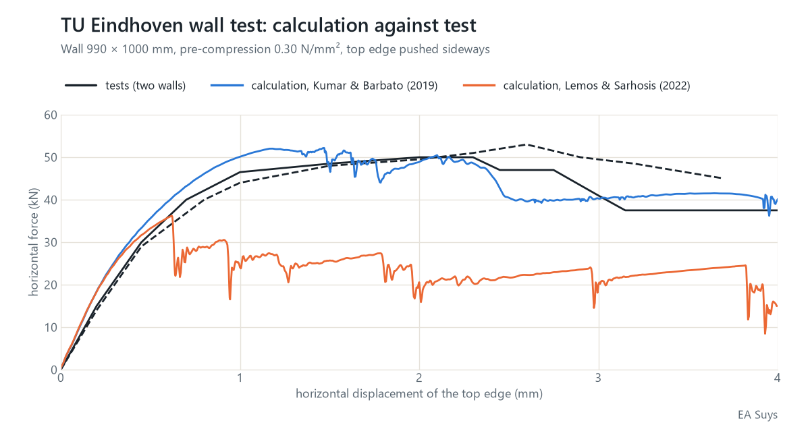

How much can an old brick wall still take? Calculated brick by brick
A new opening in a load-bearing wall, cracks after a settlement, an old wall loaded differently after a conversion: with existing buildings the same question keeps coming back. For ordinary cases the rules of Eurocode 6 are enough. For the unusual ones we calculate the wall as it was built: brick by brick, joint by joint.
Brick by brick
In our calculation model every brick is a block that deforms, and every joint is a seam that can open, slide or crush. Each joint has a tensile strength, a cohesion, a friction angle and a fracture energy: how much energy it takes to crack the joint completely. A crack can also run straight through the bricks.
The crack pattern therefore follows from the calculation itself. We see not only how much the wall can carry, but also how it fails: where the cracks start, how they spread and what is left after the first crack.
The check: a wall test at TU Eindhoven
A calculation model has to prove itself first. At Eindhoven University of Technology, brick walls of about 1 by 1 metre were tested (Vermeltfoort & Raijmakers, 1993). Each wall was first compressed with 0.30 N/mm². The top edge was then pushed sideways while it was held at the same height. These tests are a classic benchmark for masonry calculation models.
With the material data published for these walls (Kumar & Barbato, 2019), we find:
- Maximum horizontal force: 52 kN in the calculation, 50 and 53 kN in the two tests.
- After the maximum: the force in the calculation drops to about 40 kN at 4 mm displacement. The two tests end between 37 and 45 kN.
- How the wall fails: a stepped diagonal crack through the joints and crushing at the corners, as in the tests.
- A stable result: three calculations with a small random scatter on the strength of the joints give the same maximum force, within 1 %.


The material data make the difference
A second set of material data has also been published for the same walls (Lemos & Sarhosis, 2022), with a lower tensile strength and cohesion of the joints. With those data the same model gives about 36 kN: 30 % less than the tests. The behaviour after the maximum also depends on an assumption, namely how the masonry crushes at the corners.
The model is therefore only as reliable as the data on the mortar and the bricks. For an existing building we calculate with a lower and an upper bound, or have tests carried out on the mortar and the bricks where the answer depends on them.
What does this mean for your project?
- A new opening in a load-bearing wall: can the rest of the wall still carry the loads and the wind forces?
- Cracks in masonry: which movement explains the crack pattern? Together with satellite measurements of ground movement we see whether that movement is still active.
- Heritage and conversions: old walls that are loaded differently by a new use.
For ordinary cases we calculate to Eurocode 6. We use this model where those rules fall short. Questions about a specific building? Email info@easuys.be.
Sources
- Vermeltfoort, A.T. & Raijmakers, T.M.J. (1993). Deformation controlled tests in masonry shear walls, parts 1 and 2. Eindhoven University of Technology.
- Kumar, N. & Barbato, M. (2019). New constitutive model for interface elements in finite-element modeling of masonry. Journal of Engineering Mechanics 145(5). doi:10.1061/(ASCE)EM.1943-7889.0001592
- Lemos, J.V. & Sarhosis, V. (2022). Discrete element bonded-block models for detailed analysis of masonry. Infrastructures 7(3), 31. doi:10.3390/infrastructures7030031
- Rainone, Tateo, Casolo & Uva (2023). About the use of concrete damage plasticity for modeling masonry post-elastic behavior. Buildings 13(8), 1915 (CC BY 4.0). doi:10.3390/buildings13081915